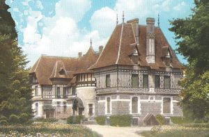
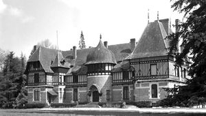
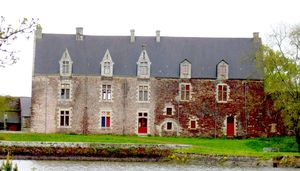
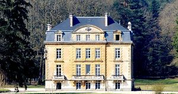
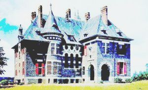
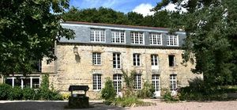

Recensement Jean-Claude Truffet
| Département | 35 — Ille-et-Vilaine |
| Canton | Montfort-sur-Meu |
| Commune | Paimpont |
| Type d'édifice | Château |
| Période d'origine | XIX-XX |
| Coordonnées GPS | 48° 01' 08" Nord, 2° 10' 11" Ouest GPS : 48°01'08" Nord, 2°10'11" Ouest Pas du Houx GPS : 48°01'08" Nord, 2°10'11" Ouest Comper 48° 04' 12" nord, 2° 10' 22?"ouest1 |






Trois châteaux à Paimpont; Broceliande-Forges, Comper et Pas du Houx et manoir du Tertre. BROCELIANDE, date de 1910 à 1914, pour Joseph Guillet de la Brosse, par l'architecte nantais René Ménard. Allié à la Famille Levesque par sa soeur Marie (épouse de Louis Levesque), Joseph Guillet avait acheté à cette dernière une partie du domaine de Paimpont en 1908, en même temps que sa soeur, Cécile, épouse de Le Chauve Devigny, qui fit construire le Pas du Houx. Le château de Brocéliande est un château de villégiature implanté au centre d'un domaine de chasse. Ce château doit son originalité à la qualité de sa réalisation exceptionnelle. Le château de Brocéliande est privé. Des FORGES, construit en 1889-1890 pour Donatien-Rogatien Levesque (1842-1908) par l'architecte nantais Lenoir. Le maître d'ouvrage est un fils cadet de Louis Auguste Levesque, armateur nantais, qui avait acheté en 1875 la forêt et les forges de Paimpont. le château du Pavillon domine le site industriel duquel il matérialisé l'autorité, il est à la fois un des rares châteaux industriels de Bretagne et un des exemples d'architecture de style XVIIIe siècle peu représenté à cette période. Bâtiment de plan régulier à cinq travées en façade, les trois travées centrales de la façade antérieure sont encadrées de deux légères saillies prolongées au niveau du rez-de-chaussée par deux corps de logis couverts en terrasse. Ces derniers encadrent un perron à double volée convergente surmonté d'une marquise. Le bâtiment comporte un étage de soubassement, un rez-de-chaussée surélevé, un étage carré et un étage de comble. Manoir Du TERTRE du XVII Geneviève Zaeppfel, hôtel restaurant.
COMPER, à l'origine château fort médiéval profitant d'une position stratégique enviable grâce à la protection offerte par le vaste étang et la forêt qui l'entourent, il a connu diverses destructions et reconstructions au fil de son histoire. Il passe aux mains des barons de Gaël-Montfort, des Laval, des Rieux, des Coligny et des La Trémoille. Démantelé en 1598 sur ordre d'Henri IV, il est incendié durant la Révolution française. Il reste peu de traces de ses parties féodales, le manoir de style Renaissance ayant été reconstruit comme lieu d'habitation au XIXe siècle. Il est le seul des cinq châteaux historiquement liés à la forêt de Paimpont subsistant à ce jour. Plusieurs légendes en font le lieu de naissance et de résidence de la fée Viviane. Il abrite les expositions du Centre de l'imaginaire arthurien depuis 1990. Il fait lobjet dune inscription au titre des M.H. depuis juin 1996. PAS-DU-HOUX, est construit en 1910 pour Cécile Guillet de la Brosse, épouse d'Augustin Le Chauve Devigny, par l'architecte nantais René Ménard. Cécile de la Brosse, soeur de Joseph de la Brosse, qui construit dans le même temps le château de Brocéliande, en face de l'étang. Alliés à la famille Levesque par leur soeur Marie, épouse de Louis Levesque, ils avaient racheté à cette dernière une partie du domaine de Paimpont en 1908. Les Devigny sont alors propriétaires de 1300 ha de forêt et font édifier le Pas-du-Houx sur la rive sud de l'étang du même nom. Corps de bâtiment principal de plan rectangulaire à travées double en profondeur recevant au 2/3 de la façade un pavillon en saillie, un oriel circulaire liant les deux corps, importants volumes de toitures à croupe marqués par de nombreuses lucarnes surmontées de frontons chantournés ou circulaires, style Renaissance et XVIIe siècle. Entrée de l'étage de soubassement surmontée d'un toit semi-circulaire, demi poivrièvre, sur une façade latérale.
Brocéliande ; Famille de Joseph Guillet de la Brosse Des Forges ; Donatien-Rogatien Levesque Comper ; Famille de la Trémoille Pas du Houx ; Famille des Devigny
"
Trois châteaux à Paimpont; Comper- grav -3, Broceliande grav 1-2, Forges grav-4 et pas du Houx grav-5, Tertre grav 6 Broceliande GPS : 48° 01' 08" Nord, 2° 10' 11" Ouest GPS : 48°01'08" Nord, 2°10'11" Ouest Pas du Houx GPS : 48°01'08" Nord, 2°10'11" Ouest Comper 48° 04' 12" nord, 2° 10' 22?"ouest1